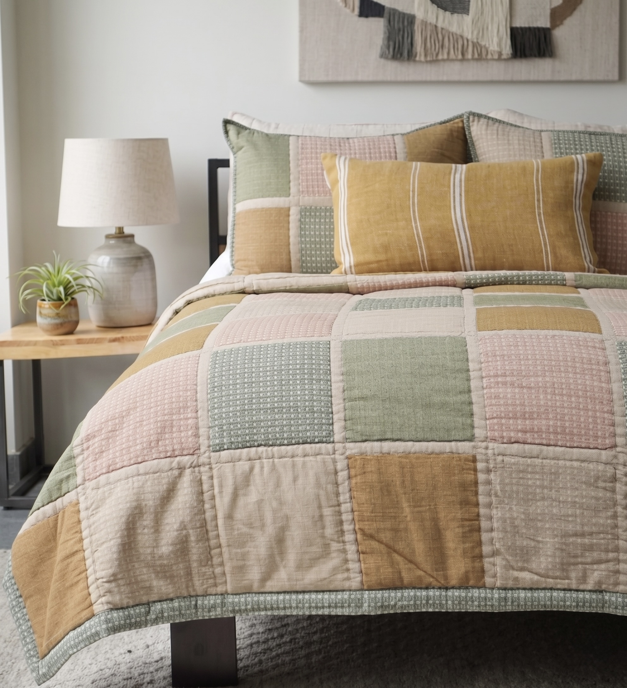
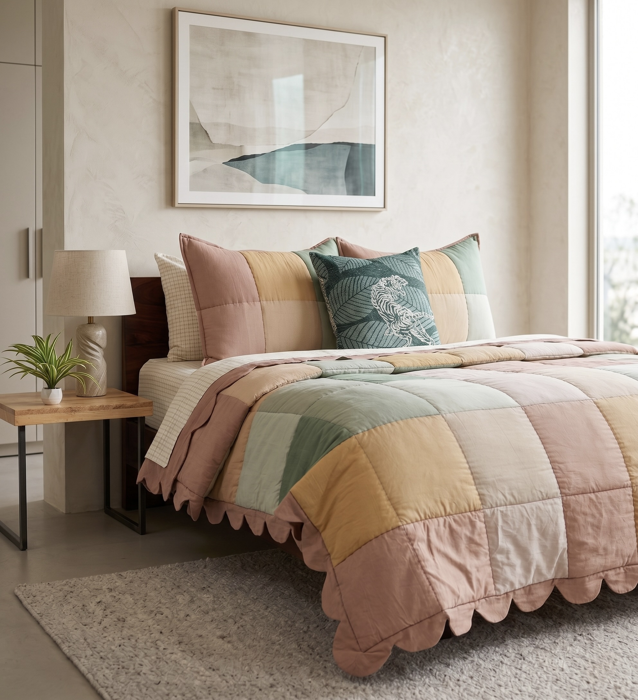
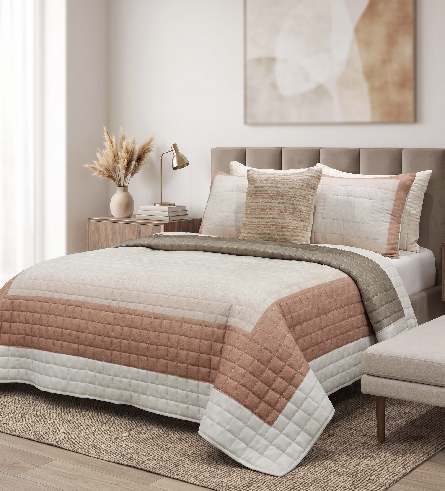
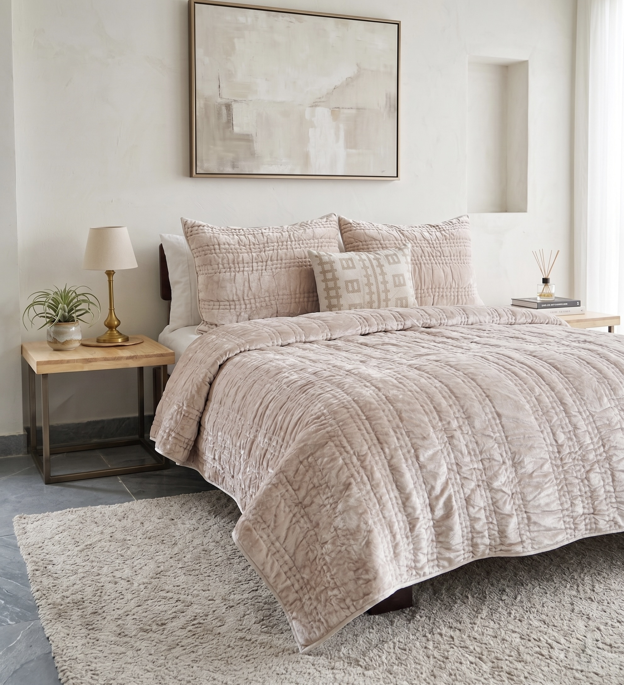
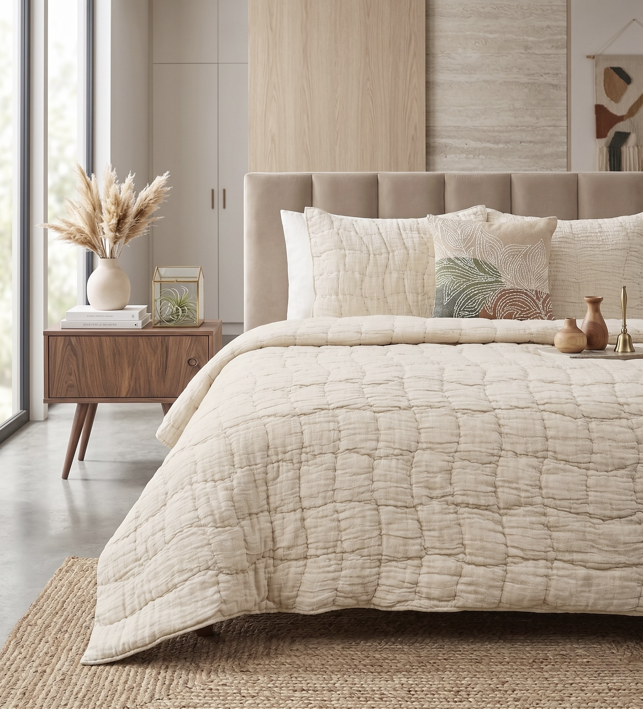
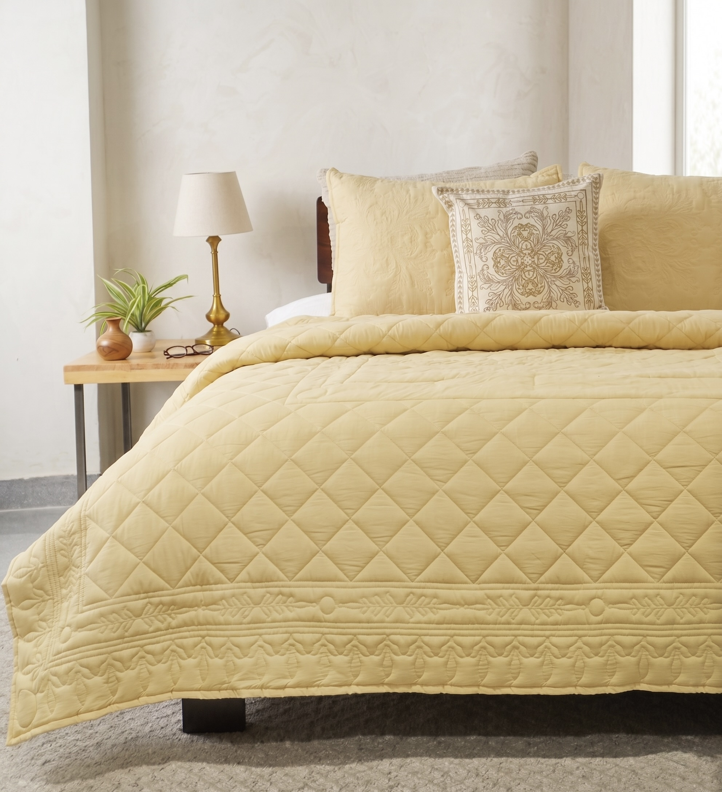
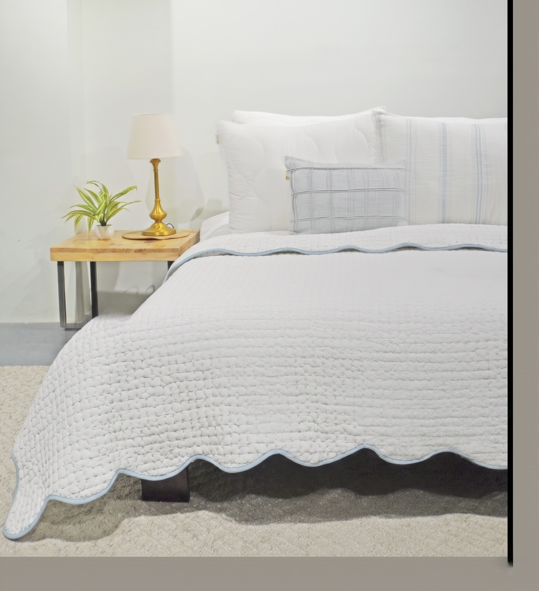
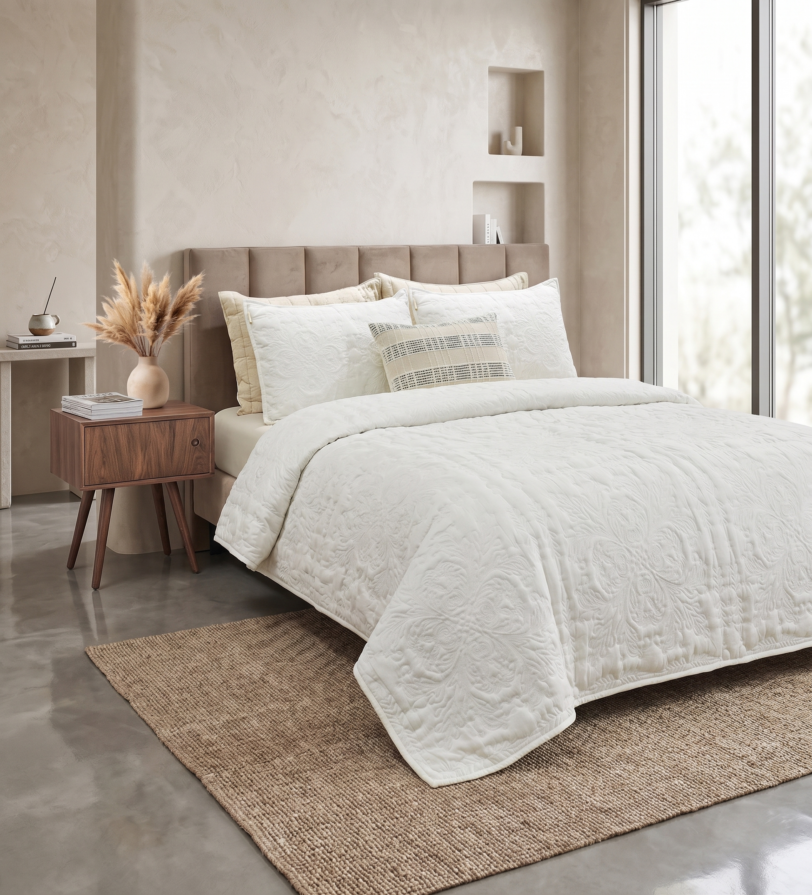

Bedding · Quilts
Patchwork, Hand Kantha, Velvet and Engineered Quilts · Private Label · OEKO-TEX as Standard
Private-Label Quilts
Abhi Home® has manufactured home textiles in India since 1965, and quilts are one of the constructions our bedding teams know best. We make quilts, quilted bedspreads and coverlets in cotton, linen and velvet, from graphic patchwork to tonal engineered quilting and hand kantha. Every programme is made for the buyer's own brand: your design, your care label, your packaging.
We combine hand quilting (kantha) and machine quilting under one compliance scope, so a buyer can run a hand-stitched hero piece and a repeatable engineered quilt in the same order. Quilts come in standard, oversized (OS) and custom dimensions, with matching shams. For duvet and quilt covers, coverlets and comforters, see the full bedding collection.
Constructions
Pieced blocks of contrasting colours or textures, sewn into a single face before quilting. Works for both colour-block and tonal designs.
The Indian running-stitch technique, worked by hand across the whole quilt. Each piece has a slightly different, natural texture. Made to order.
Straight-line quilting in squares or channels. Clean and contemporary, and a good base for stripes, crinkled cotton and solids.
A machine-programmed pattern, such as diamonds or tonal florals, repeated identically across every piece for consistent retail runs.
Velvet faces quilted to hold their pile and sheen. Usually paired with matching velvet shams for a full set.
Garment-washed or crinkled cotton for a soft, lived-in hand and a relaxed drape. Available in organic cotton.
Quilt Range
A selection from our quilt archive. Every design can be developed in your own colourways, sizes and fabric, or used as a starting point for a new programme.

AH-QL-24-1205
Blocks of blush pink, sage green, mustard and natural linen, each in its own surface texture, from dotted to plain to stripe. Supplied with matching quilted shams. A strong seller for lifestyle retail.

AH-QL-24-1206
Broad washed colour blocks in dusty rose, terracotta, sage and mustard, finished with a scalloped border. Custom colourways available for lifestyle and boutique hotel programmes.

AH-QL-24-1211
Horizontal panels of dusty blush, warm taupe and ivory cotton, box quilted throughout for a clean, contemporary finish. Custom colourways available for bedding retail programmes.

AH-QL-24-1221 · Oversized
Oversized quilt in warm blush-taupe velvet. The pile catches the light and gives the quilted surface depth and sheen. Supplied with matching shams.

AH-QL-24-1222 · Oversized
Organic cotton in a warm natural oatmeal tone, crinkled for a relaxed, linen-like drape and quilted in square blocks. A simple construction suited to hospitality and minimal retail ranges.

AH-QL-24-1224
Marigold-yellow cotton with engineered diamond quilting for a uniform, crisp surface, and an engineered quilting pattern at the border. Supplied with matching shams. Repeatable across retail runs.

AH-QL-24-1226 · Oversized
Hotel-white cotton with hand kantha quilting: every stitch is placed by hand, which gives the surface its soft, natural texture. Finished with a sky-blue scalloped border. Made to order for boutique hotels and premium lifestyle retail.

AH-QL-24-1227
Off-white solid cotton with an engineered quilting pattern that gives a consistent, tonal surface across every piece in a run. Light, clean and versatile. Supplied with co-ordinating shams.
For Buyers
A clear tech pack shortens sampling. These are the points we confirm with every buyer before the first sample is cut. Our guide to private-label development walks through the full process.
Compliance & Timing
OEKO-TEX Standard 100 as standard for bedding. GOTS organic cotton on request, and GRS recycled options, with chain-of-custody documents per shipment.
MOQs depend on construction and fabric, and are kept lowest at sampling stage. Hand kantha quilts are made to order. See how MOQs work.
75 to 100 days after sample approval for quilts and hand-worked constructions, plus 21 to 35 days of ocean transit. More in our lead times guide.
Frequently Asked
We make patchwork, hand kantha, box and grid quilted, engineered quilted, velvet and crinkle-washed cotton quilts, plus quilted bedspreads and coverlets. Fabrics include cotton, linen and velvet, in standard, oversized and custom dimensions, with matching shams.
Yes. Abhi Home® is a private-label (OEM) manufacturer only. Every quilt programme runs under the buyer's brand, care label, tech pack and packaging specification.
MOQs are low and flexible, and depend on the construction and fabric. Hand kantha and other hand-worked quilts are made to order. Share your target quantities and we will confirm what works.
OEKO-TEX Standard 100 is our standard for bedding, including quilts. GOTS certified organic cotton is available on request, and GRS recycled options are available for buyers with recycled-content targets.
Bulk production typically runs 75 to 100 days after sample approval for quilts and hand-worked constructions. Ocean transit adds 21 to 35 days to most destination ports.
Send us your brief, target sizes and quantities, and we will come back with construction options and samples. Prefer to start from our archive? Ask for the bedding catalogue.
Explore More
Bedding
The full bedding collection, including duvet and quilt covers, coverlets and comforters.
Explore Bedding →Sourcing Guide
MOQs, lead times, thread counts and certification for bedding programmes sourced from India.
Read the Guide →Soft Furnishings
Cotton and recycled-blend throws to sit alongside a quilt range.
Explore Throws →